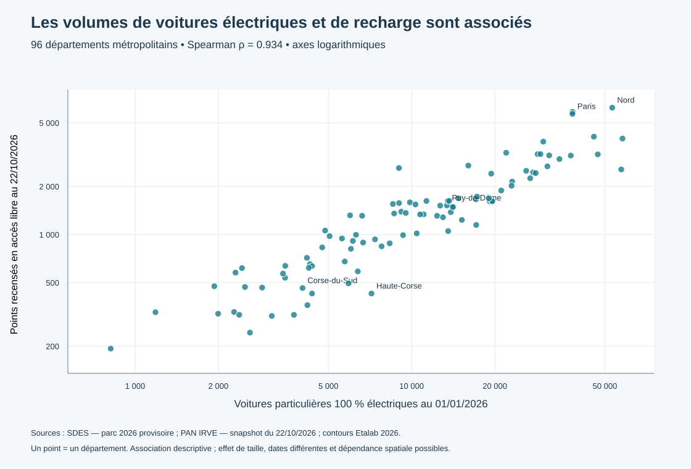

Une première comparaison départementale : parc de voitures particulières 100 % électriques au 1er janvier 2026, face aux points de recharge déclarés en accès libre dans le snapshot du 22 octobre 2026.
Ce que l’on mesure : de l’offre recensée rapportée à un parc résident de véhicules. Ce ratio ne mesure ni le besoin réel, ni l’utilisation, ni la disponibilité des points, ni la rentabilité d’une implantation. Les périodes diffèrent et le parc 2026 est provisoire.
Points recensés en accès libre pour 100 voitures particulières électriques. Les couleurs décrivent des valeurs, sans définir un niveau « suffisant ».
Chargement…
Les territoires ultramarins restent dans la table source ; leur ratio n’est pas publié car la couverture IRVE était insuffisante au CM1. Les codes commune manquants ont été traités au niveau départemental par coordonnées, avec exclusions des incohérences.

Interprétation : les territoires où le parc électrique est plus important tendent à recenser davantage de points. La taille des territoires contribue probablement à ce lien. Ce résultat ne prouve pas que l’offre répond aux besoins. Les axes logarithmiques facilitent la lecture des petits et grands départements.
Télécharger le graphique SVG · Résultats chiffrés · Contrôles de jointure